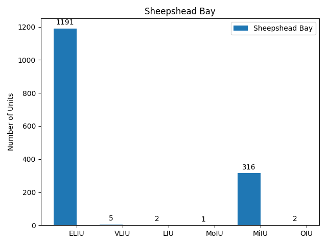
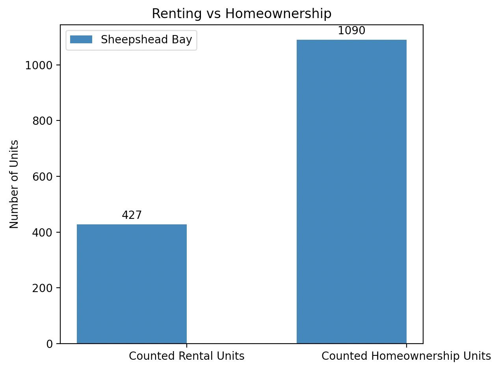
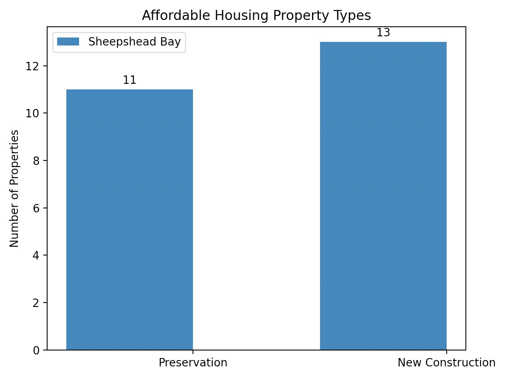

Sheepshead Bay Analysis
Basic Demographics
The neighborhood I chose is Sheepshead Bay in southeastern Brooklyn. As far as neighborhoods in New York City go, it is rather large at 2.28 square miles and a population of 147,401 people (2019). It encompasses both of the zip codes 11229 and 11235. Only 46.6% of Sheepshead Bay’s population was born inside New York State, with 48.0% of its population being foreign born. 29.7% of its residents are 65 and over, while 29% of households have children under 18 years old. Ethnicity-wise, Sheepshead bay is growing in diversity, although it remains predominantly white. 67.2% of its population is white, 17% Asian, 3.8% Black, and 6.7% Hispanic, resulting in a racial diversity index of 0.51 (up from 0.39 in 2010). The neighborhood is known for its large population of residents ethnically from Eastern Europe. Median household income has increased since 2010 and in 2019 was $78,950. In 2019, Sheepshead Bay’s poverty rate was 11.6%, slightly higher than the national average of 10.5%, but significantly lower than Brooklyn’s average of 17.7%. The neighborhood’s unemployment rate was on par with the national average in 2019, at 3.82% with only 11.7% of the population aged 25+ lacking a high school diploma. There were 4.4 property crimes and 2.2 violent crimes per 1,000 residents in 2021, significantly lower than Brooklyn’s average of 6.6 and 4.3 respectively. 58.5% of Sheepshead Bay’s residents enjoy a car-free commute, with the average commute taking 46.4 minutes.
As of 2019, 45.7% of Sheepshead Bay’s residents are homeowners with 62,863 housing units within its boundaries. There is a 3.6% rental vacancy rate and 2.7 foreclosures per 1,000 1-4 family and condo properties. There are 26 subsidized properties in the neighborhood, 4 public housing properties with 2,204 total units (7.1% of rental units were part of NYC public housing). Median rent across all apartment types in Sheepshead bay was $1,520 in 2019.
Source: https://furmancenter.org/neighborhoods/view/sheepshead-bay
Neighborhood Rankings
Niche ranks neighborhoods based on their cost of living, type of population, type of housing (as in townhouses, apartments, etc.), home ownership, walkability, commute, jobs, crime and safety, public schools, politics, diversity, past-time activites, and weather. Similarly, Brick Underground also ranks its neighborhoods by their affordability, convenience, past-time activities/nightlife, and crime rates. Brick Underground also takes a neighborhood’s “cool factor” into account for its rankings. Street Advisor also bases its neighborhood rankings on price, things to do, schools, and communities (type of people). Street Advisor also features a few unique categories, specifically pertaining to public transit and a neighborhood’s personality. DNAInfo only follows two metrics for ranking neighborhoods, which focus on violent and property crime rates. Similarly, Curbed focuses solely on a neighborhood’s walkability, providing walk scores, transit scores, and bike scores based on their proximity to transportation, shops, restaurants, etc.
Our group favors Niche’s rankings because of the diverse array of variables that it takes into consideration to compare neighborhoods. Some of these metrics, such as the type of population, jobs and commutes, and public education are extremely important to residents, but were overlooked by other rankings. Niche’s system is the most holistic and well-rounded.
Certain qualities that make neighborhoods a desirable place for affordable housing include their cost of living, walkability, proximity to public transportation, and access to high quality schools. Community involvement and resources, diversity, low crime / safety rates, weather, and green spaces also enhance the quality of a neighborhood. Ultimately, our group concluded that walkability, cost of living, and low crime / safety rates would be the most important factors for us in determining advantageous locations for affordable housing.
According to Niche’s “commute” category (which we are using as a metric for walkability / access to public transit), Prospect Heights (A-) and Sunset Park (A-) are tied for first, followed by Sheepshead Bay (B+) and then Brownsville (B). Sheepshead Bay, Sunset Park, and Prospect Heights all rank at “C-” in cost of living, with Brownsville slightly ahead at C. Prospect Heights and Brownsville proved to be nearly equal in this category, despite Prospect Heights being one of the wealthiest neighborhoods in NYC and Brownsville being the “poorest.” Comparing Prospect Heights’ median household income to median rent prices, Niche presents a $100,568 to $2,020 ratio, while Brownsville’s is $33,380 to $947. Though the income to rent ratio may make the “cost of living” ranking for these neighborhoods seem identical, residents’ quality of life varies based on their proximity to public transit, education, and neighborhood politics. Prospect Heights (B-) would also be deemed the safest of our four neighborhoods, followed by Sheepshead Bay (C+), Sunset Park (C), and Brownsville (C-).
Overall, our neighborhoods would rank as follows: Prospect Heights, Sheepshead, Sunset Park, Brownsville.
Data Exploration
Income Brackets

The graph clearly shows an overwhelming majority of Extremely Low Income Units with 1191 households falling into this category. There are also 316 Middle Income Units, which is the only other significant category, as there are less than 5 units in the Very Low, Low, Moderate, and 'Other' categories. This indicates that the households in Sheepshead Bay tend to be on either end of the extreme: either extremely poor or relatively well off.
By analyzing the data for each zip code separately, we found that all 79 of the units in the zip code 11229 fell into the Middle Income category (the highest income bracket in the list), while all of the 1191 Extremely Low Income Units are in the 11235 zip code (along with the 237 Middle Income units, although they make up a much smaller proportion of the units in the 11235 zip code). We will come back to this income divide between the two zip codes in Sheepshead Bay later on in the analysis as well.
Rental vs Homeownership

We were surprised to find that there were significantly more homeownership units than rental units in Sheepshead Bay, at 1090 and 427 respectively. We expected that because there were so many extremely low income households, many would be forced to rent and would not in a financial position to own their units, but it turns out that our hypothesis was incorrect. This trend does make sense though, because Sheepshead Bay has comparatively few apartment buildings and most units are in two or three-story townhouses or detached single-family homes.
Interestingly, not a single household in 11229 (the wealthier of the two zip codes) owns their affordable housing unit, with all of them renting. When looking at 11235 though, it becomes clear that renting vs. homeowning comes down to building policy rather than personal choice of each household, since no building offers renting and homeowning at the same time: it's always one or the other. Nonetheless, the majority of households in 11235, which has a majority of extremely low income households, own their unit.
Preservation vs New Construction

Based on this graph, the number of new constructions and preservation buildings are pretty evenly split in Sheepshead Bay. There are surprisingly few buildings for the over 1500 affordable housing units in Sheepshead Bay, which suggests that the large number of homeowners own apartments rather than detached single-family homes or townhouses. 11229 (the wealhtier zip code) has entirely new construction buildings, while 11235 is more of a mix. This makes sense because 11229 might be more desirable location to live in (based on these statistics) and is thus more likely to receive investment and funding for new construction / affordable housing.